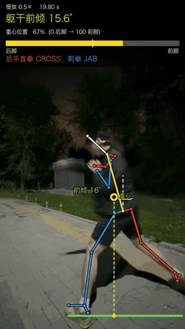
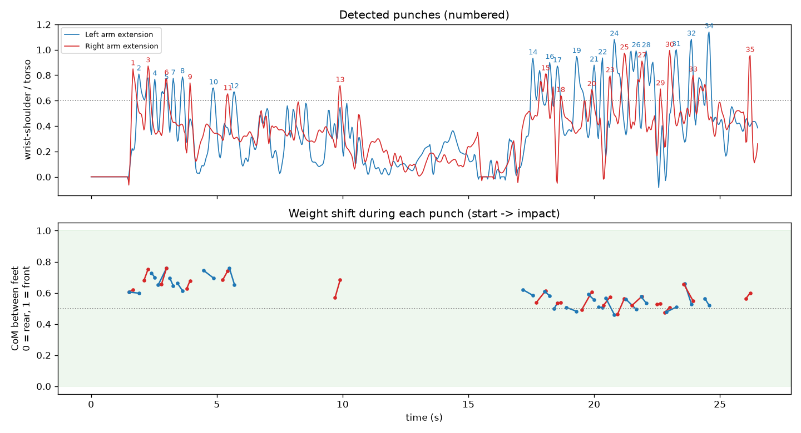

提取骨架并估算重心
用 Sports2D / RTMPose 提取关节点，按人体参数表加权估算重心，画出支撑范围。
一个分析手机训练视频的 Python 工具，可提取二维骨架、估算身体重心、检测出拳，生成慢放标注视频。


播放公开的骨架与重心标注片段，或打开完整慢放视频和分析图表。
只播放已有分析素材，不分析新视频，二维重心估算受拍摄角度、遮挡和帧率影响。
把视频中的重心移动、躯干倾斜和逐拳指标画出来，供训练后对照查看。
用 Sports2D / RTMPose 提取关节点，按人体参数表加权估算重心，画出支撑范围。
检测出拳，按站架区分刺拳和后手直拳，记录每拳的重心转移与运动指标。
输出 0.5 倍速视频，叠加骨架、重心轨迹和躯干倾斜，并生成分析图表。
手机视频便于采集；二维分析受深度和透视误差影响，无法直接得到可靠的三维重心。
用重心在双脚之间的相对位置表示转移，双脚重叠时该比例难以可靠计算。
以肩高附近的水平伸出过滤部分误检，上勾拳等动作可能漏检。
个人分析原型，仓库提供一段空击样例。
Python / Sports2D / RTMPose / rtmlib / ffmpeg / 二维关节点 / Winter 人体参数表